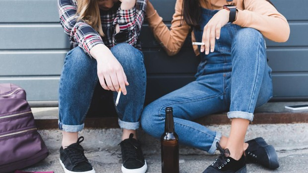

«El consumo "normal" de alcohol de los jóvenes lo marca también lo que beban sus padres»
Sol Sanz, educadora social, ofrece algunas claves para prevenir el consumo de alcohol en los hijos

Sol Sanz tiene tras de sí una trayectoria de más de 30 años como educadora social trabajando con adolescentes en diferentes ámbitos, desde el ocio y tiempo libre hasta la coordinación de equipos, pasando por la intervención familiar en situaciones de riesgo y vulnerabilidad en la adolescencia.
Actualmente desarrolla su labor en centros de protección del menor como educadora social y es participante del tercer congreso Online Convivir con un adolescente: misión posible
¿A qué edad se debería comenzar idealmente la prevención del consumo de alcohol en adolescentes?
Realmente se piensa que a los 18, que es cuando, en teoría, pueden consumirlo de forma legal pero lo ideal es hacerlo desde que son muy pequeñitos. Cuando un chaval cumple los 16 años ya estamos llegando tarde para poner un límite. Se trata de un asunto muy complejo que debe analizarse desde diversos aspectos. En el mundo musulmán, por ejemplo, está prohibido el consumo de alcohol en todas las edades. En la cultura europea, la española sobre todo, está muy normalizado dicho consumo de padres delante de los hijos que pueden llegar a pensar: «mamá y papá, qué bien se lo pasan tomando alcohol». Después está el marco familiar que tiene múltiples variantes, aquellas que jamás beben alcohol ni delante de los niños ni en su ausencia, aquellos que beben en ocasiones especiales, otras que lo hacen dependiendo de con qué parte de la familia estén... Por lo tanto, lo que sea normal o no para los niños, futuros jóvenes, lo marcará también su familia.
Ante las inseguridades y cambios hormonales propios de la pre y adolescencia, ¿es importante hablarles de todos estos cambios para que no caigan en adicciones para esconder sus inseguridades?
Claro, por ejemplo para poder decir no a la primera vez que le ofrezcan su primer cigarro, su primera cerveza, su primer cubata.
¿Por qué comienzan a probar el alcohol?
Por varias razones. Una de ellas es «la primera vez», a los adolescentes les gusta probar. La primera vez incluye, por supuesto, probar el alcohol que no sería una gravísima situación si no se repite. Ahí es cuando tenemos el problema, cuando lo convierten en algo habitual.
Otra de las razones es la presión grupal. ¿Qué ocurre cuando se encuentra con su grupo de iguales? ¿Qué hago si todos beben y yo no? En esta etapa para ellos es tan importante ser aceptados por el grupo, que los adultos debemos acompañar para hacerle reflexionar sobre la importancia para su salud de que no beba. Si no somos capaces de llegar a ellos como padres, podemos recurrir a algún adulto que tengan como referencia, como un primo, un tío o alguien que les pueda hablar con franqueza. Es bueno delegar para que llegue el mensaje al adolescente.
Otra razón es por timidez. En la adolescencia está la etapa de los mil amores y esto está muy relacionado. Dos cervezas me ayudan, desinhiben y en ello encuentran una razón. Falsa, pero una razón.
Otro, ya más serio, el que tenga problemas personales. Ese adolescente beberá de manera descontrolada. Y la única forma de corregirlo es con terapia y esto hay que tomárselo muy en serio.
Lo principal es mantener una comunicación fluida con ellos. Aunque creamos que no escuchan nuestras recomendaciones, sí les llegan tarde o temprano. No perder la paciencia, repetirle siempre que estás para ayudar y estar siempre con ellos. Hay que ayudarles a decir no. Esto se desarrolla básicamente en la adolescencia. En la adolescencia suben escaleras en las que los adultos debemos ser su barandilla de apoyo. Y deben ser firmes para que no se precipite.